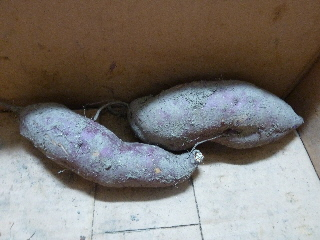
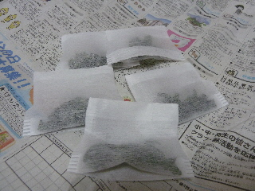
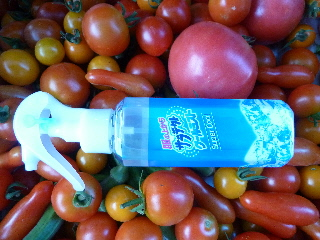

さつまいもを掘りました。
2015/08/30
8月ですが、もう十分な大きさになっていました。

美味しそうです。
2015/08/30
8月ですが、もう十分な大きさになっていました。

美味しそうです。
2015/08/10
生のミントを使えばいいじゃん。って思っていましたが、お風呂に入るたびに冷蔵庫から取り出すのが面倒なんですよね。

ドライならお風呂場の近くに置いておけるので、さっと取って使えて便利です。
使わなくても日持ちするので、慌てて使わなくていいので安心です。
冷蔵庫の中で枯れるのを思うと、こっちの方がいいかな？って思って作りました。
2015/08/02
虫よけスプレーをドラッグストアで探していたら、いいものがありました。

服の上からサラテクト クールミストです。
虫よけスプレーですけど、プラス清涼感があったり、洋服に付けてもいいので使いやすそうです。
これだったら首や耳にスプレーする時に、服につかないかを心配しなくてもいいです。
実際付けた感じは、ちょっと刺激が強いかな？しっかり清涼感がありました。
（私は少し肌が弱いです。でもかぶれなくて良かった。）
熱い夏に、風が吹いた時の清涼感はたまらなく気持ちいですね。
これから畑仕事の時はガンガン使おうと思います。
あと、レジャーでも使います。
過去の日記
畑仕事じゃないよ。